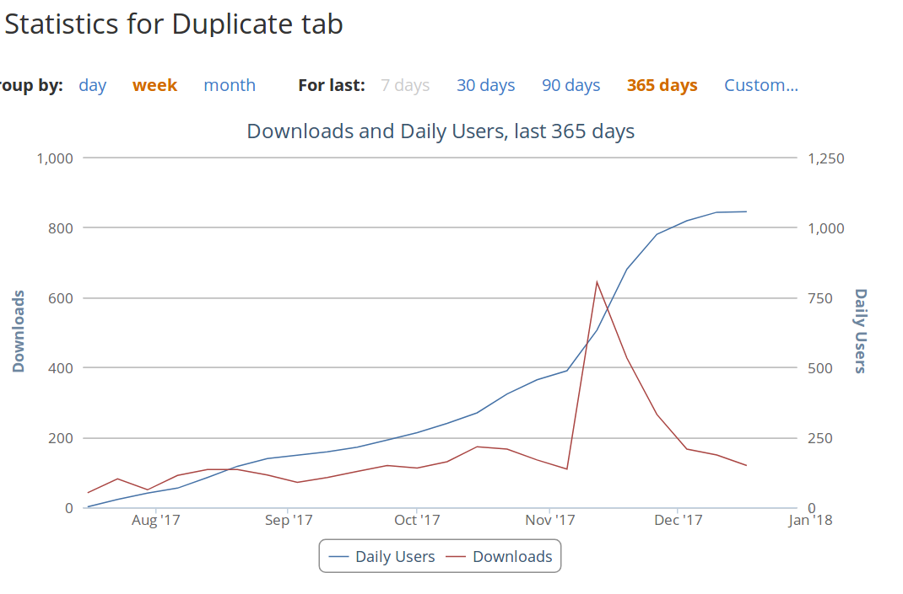
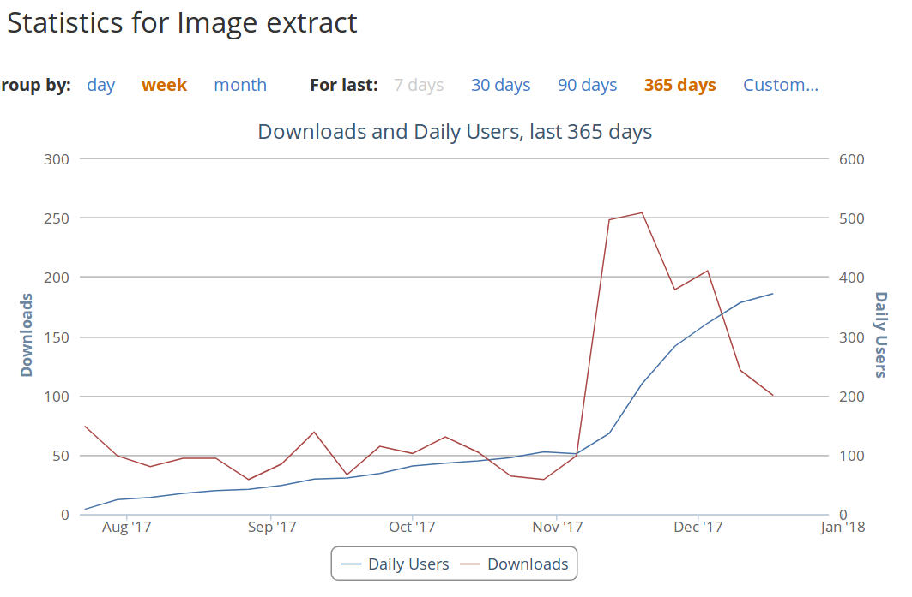
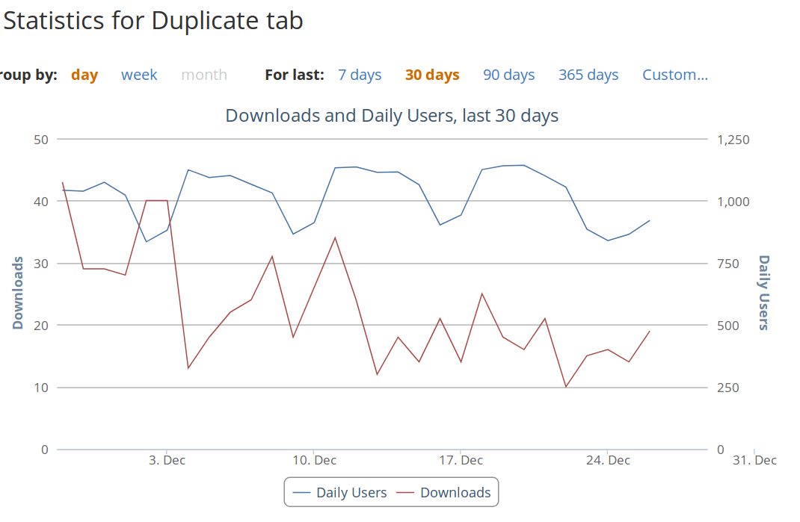

Duplicate Tab
2017/12/28
When I was younger I spent many hours trying to make games and utilities on Scratch. Many of them got little to no attention whatsoever. They may have recieved clicks but I could upload a project and be lucky to get one comment. It is somewhat ironic that now when I log in every now and then I continue to get comments on a number of my better projects even though I no longer desire feedback on them. Occasionally people even follow me despite my account profile clearly saying I don't use Scratch anymore and linking to my Github account.
Between the years I spent learning to code in text languages and up to posting Duplicate Tab to AMO I didn't have such direct feedback from end users. The few games I finished in love2d were either designed just for me to play, for learning, or later to show friends at school on my phone. I don't recall version controlling them and their lifespans were very short - the code bases messy and hard to maintain.
I moved onto and contine to develop Java plugins for a server, and now I write maintainable code with version control (or so I hope). Still, I am not much of an end user for these plugins and what user feedback there is I tend to get second hand.
Similarly, on assignments the tasks tend to be something designed for easy testing and marking, not to fuffil a need. I have not found use for anything I submitted aside from borrowing code for later ones (and mostly only because Java does not provide a Tuple by default).
I was motivated to learn WebExtensions because the add on RightToClick that I use had disappeared off the face of the web. This wasn't a initially a problem as I still had the xpi file so I could keep transfering it to new Firefoxes but it was a legacy extension, and come November it would cease to be supported on release Firefox. I even tried very hard to look for alternatives but they did not exist (or at least I never found them).
Therefore during the summer I knew I would have to write this myself or lose the functionality. This was achievable; I already knew JavaScript and already knew how basic websites worked. All I really needed to learn was the API to hook into the browser, and Mozilla's documentation is superb compared to what I have become used to. Additionally I did not need to write something very complicated. I only cared about the image extraction function of RightToClick and would not miss all the other functionality.
Because I needed one web extension to do one thing I did not bother with configuration. I just needed to click the add on button and let it run its script. The script didn't even need to make calls back to the add on because it just needed to modify the DOM.
This was how Duplicate Tab was born.
I made it first to learn the absolute basics of the API - I needed to learn how to setup the skeleton code of an addon that could respond to a button click. At the time of Firefox 55 duplicating a tab was actually non trvial if you don't have a scroll wheel to click the refresh button with. This addon was effectively my hello world program. I made it to have a setup for developing off, and figured I may as well make something mildly useful too.
I recall scrolling through addons.mozilla.org looking for a duplicate tab extension at some point, before I had submitted mine, possibly before I even made it. Nearly all of them were legacy extensions which meant my new flashy WebExtension version would actually have minimal competition come November.
Sometime later with a working, unconfigurable, Duplicate Tab built I published my first extension onto AMO. I installed it myself obviously as it was mildly useful but I expected the user count to stop at my 3 Firefoxes. It didn't even work on Android for some reason when I tried to test, even though the APIs it uses should. I was also not aware before publishing that many extensions on AMO are open source. I put the github link almost at the top of the description to make it very clear mine was.
I'm still not sure how you are supposed to view the source of these open source add ons aside from installing them and unzipping the file. I wonder, looking back, if having the source code so clearly marked and easy to view helped distinguish my add on from the other WebExtensions doing the same thing. Perhaps it might even get someone interested in programming one day.
Maybe I also got the naming right, calling it by its function, perhaps a very close match to what users search for when looking for such an add on. I think I was searching for the very words when trying to find one myself too.
Soon after publishing Duplicate Tab I finished my first version of Image Extract and published that too. To my knowledge there is still 0 competition to what Image Extract does on AMO. And yet Duplicate Tab enjoys far more weekly users and downloads than Image Extract.
I also never expected to get feature requests for add ons so trivial, but I implemented a configuration page into Duplicate Tab and I already have a growing list of features to add at some point. Once implementing something for one I ported the code over to the other. The two even share most of the same svg file for their icons. I may move their shared code into a git submodule at some point if it continues to grow.
It has been years since I've had so much interaction with end users on something I made online, and I think Duplicate Tab is actually my most used project ever - even though it is far from the one that took the most effort. It brought back the excitement to see a review from someone I've never met before, and I even saw someone mention it on Reddit. I continue to be amazed by the graphs of it gaining popularity, of people actually using something I made.
By any measure I could have it has been a huge success. Not one I expected but a very pleasant occurance nontheless.
I typed the above before November brought with it Firefox 57 to release - with its provided by default duplicate tab right click menu. I fully expected this to kill my add on.
The number of installs on Duplicate Tab peaked on the second week of Novemember. This spike around FF57's release also happened to Image Extract, so I imagine it is mostly due to Mozilla's push to bring Firefox back to the browser wars and the flood of new users with it, but Image Extract continued to enjoy an install rate higher after the peak through December. Duplicate Tab on the other hand has a sharper spike in comparison. It seems 1100 users is likely to be the most it ever gets, with the install rate now so low and Mozilla having made its original purpose redundant.
It turns out having a shortcut to duplicate tabs remains a useful feature. After implementing the request I have found myself using it regularly - hopefully I can also find a shortcut that works on every platform. There is also no such default duplicate menu in Firefox Android, so if I can get my addon working on Android it may yet live a while longer.
It seems most of the (potential) users who installed Duplicate Tab before FF57 for the right click menu haven't bothered to uninstall it - only stopped installing. Therefore as people migrate devices and reinstall software Duplicate Tab will slowly lose the >1000 user count. In comparison Image Extract still hasn't reached 500 users, though it is still gaining users.
I am not bitter that Mozilla mostly killed my add on; I was amazed to see the user count go past 3 and Firefox is better with the duplicate tab menu by default.
  New note: FF57 did not kill my addon because it still has over 1300 users as of 2019/05/22, though the user count is very flat now. I presume my addon was saved by Firefox not providing a keyboard shortcut.